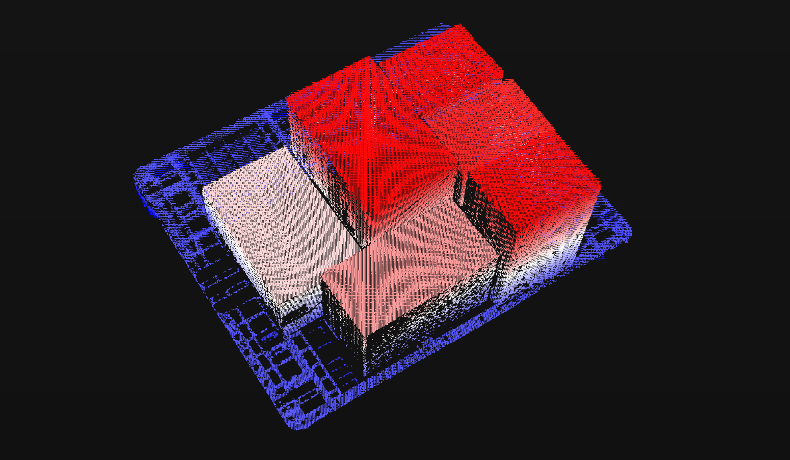
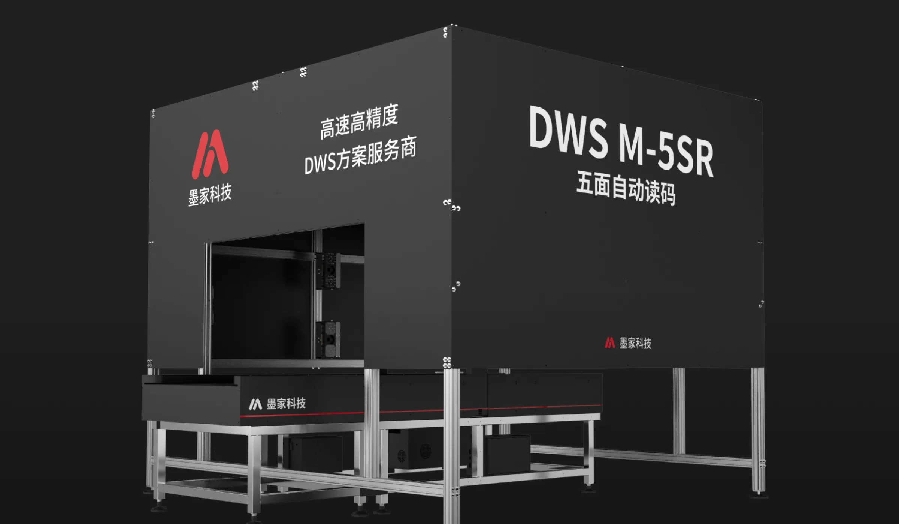
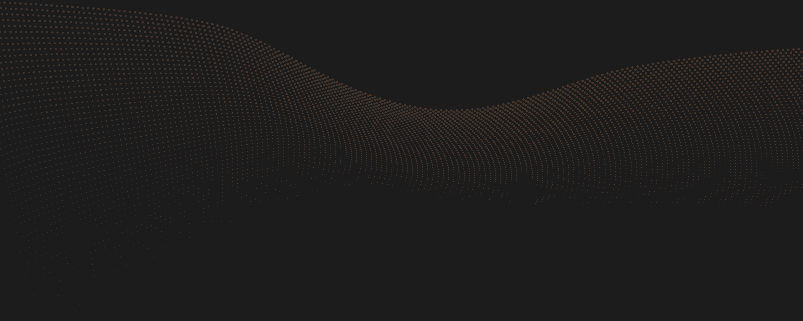

个人简介
你好，我是 Jack。从 MCU 上的 I²C、电机 PID，到 Linux 上的视觉与 3D 点云——我对信息的获取、处理、传输与呈现一直有兴趣，那是人类感官在技术里的延拓。
现在在洗碗机机器人相关的工程里：视觉、运控、碰撞规划、夹取策略。现阶段最大的愿望，不是单点突破某个算法，而是搭好一个合作框架——让每个成员在自己负责的功能里天马行空，舞台搭起来，大家才能稳定交付。
日记里写过故乡的山路、树、山泉，也写过「只是活下去，就已经很累了」。来时路在身后，渺小与前进可以同时成立。这个网站把那些工作笔记和个人日记里值得留住的片段，诚实地放在这里。
我在意的事
⚡
从引脚到套接字
DSP 上写 I²C 能感到 3.3V 的实感，UDP 则要穿过一层层抽象。两种距离，都值得理解。
📓
日记与梦
一行字、一段长叹、一个抓鱼的梦——不必每篇都有结论，被看见就够了。
🌿
来时路
树、山泉、被牛踩过的山路。二十年过去，它们基本上还是那样——确认你从哪里来，仍在你身上。
🪜
笨人的填步法
多走几步，把中间跳的步骤一点一点填上。不生气，不害怕，总能理解的一天。
生活理念
「走暗路，耕瘦田，进窄门，烧冷灶。」
- 01 知行合一 — 行不到，往往不是因为懒，而是知还不够。先补认知，再怪自己。
- 02 恩赐与推不动 — 能学进去、理解能推进的日子是上天的恩赐；推不动时也允许存在。
- 03 渺小与前进 — 永远有赶不上的少年，参差还在；个人网站搭起来了，前进也是真实的。
- 04 诚实一行字 — 「只是活下去，就已经很累了。」不必每段日记都优化成正能量。